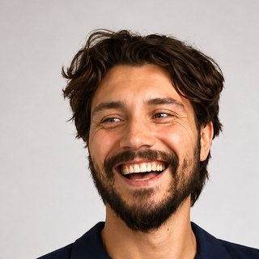
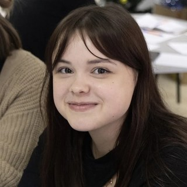
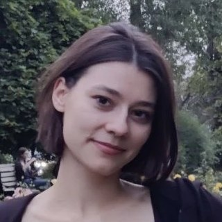
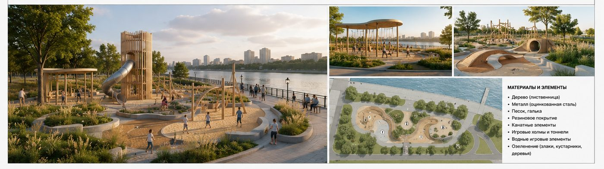
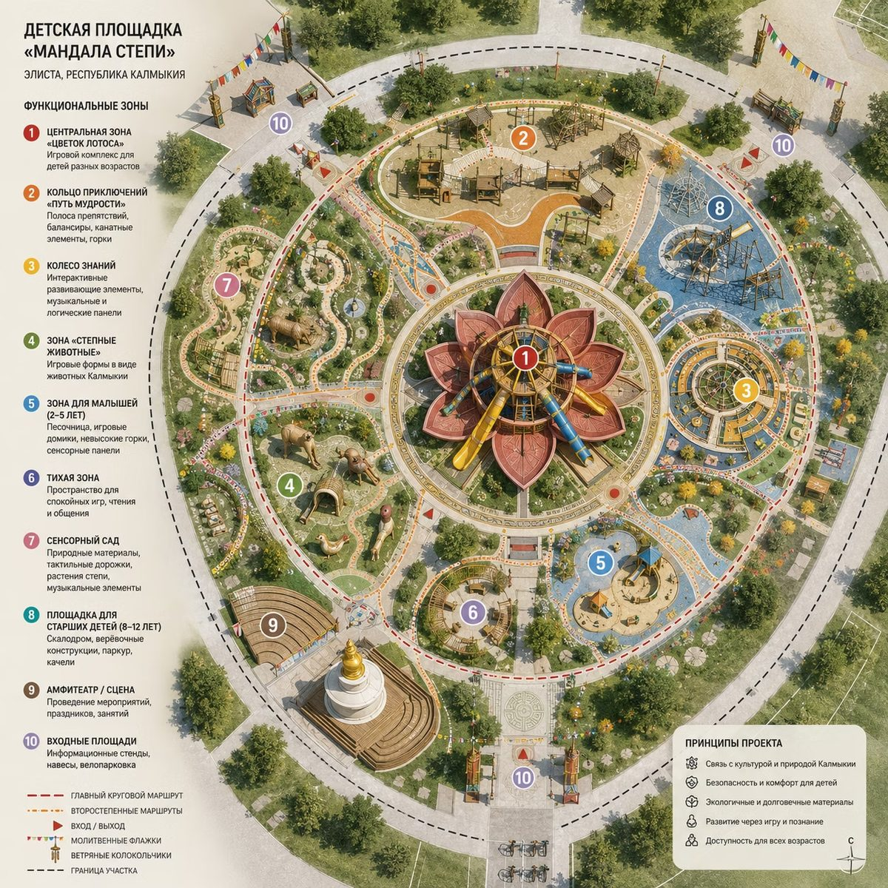
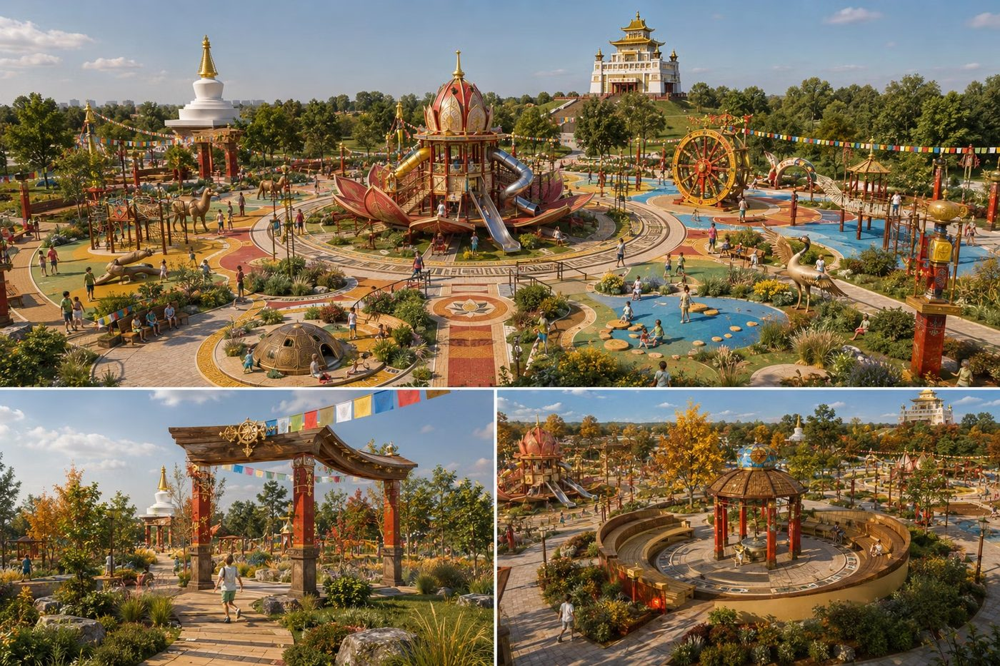

Для тех, кто анализирует территорию и хочет делать это быстрее
QGIS и работа с нейросетями разбираются с нуля, поэтому специальная подготовка не нужна: достаточно уверенно пользоваться компьютером.
Подойдёт, если вы
- архитектор, урбанист, дизайнер среды: начинающий или практикующий;
- студент: диплом на момент записи не нужен, участвовать можно сразу;
- готовите конкурсную заявку или концепцию и хотите подкрепить её данными.
Вступительных испытаний нет. Если диплома пока нет, участвовать и защищать проект можно сразу: после защиты мы выдадим справку, а удостоверение о повышении квалификации выдаётся после получения диплома.
Три места, где анализ территории чаще всего тормозит
Анализ отнимает дни
Карты, схемы и описания приходится собирать и оформлять вручную. На курсе схемы строятся в QGIS из открытых данных, а выводы по ним помогает формулировать ИИ.
ИИ используют вслепую
Запрос «придумай концепт парка» выдаёт банальный результат. На курсе задачу ставят по схеме: роль, контекст, задача, примеры, формат, тон.
Выводы трудно показать
Анализ остаётся в таблицах и файлах. На курсе всё собирается в одну интерактивную презентацию, которую можно показать заказчику или комиссии.
Что вы делаете на курсе
Готовите карты участка
Подложки, дороги, здания, рельеф, кадастр. Оформляете карту в QGIS и выгружаете в PDF.
Анализируете с помощью ИИ
Собираете техническое задание и контекст, строите сценарии и портреты аудитории с помощью языковых моделей.
Визуализируете и собираете проект
Превращаете эскизы в визуализации с помощью нейросетей и собираете результат в итоговую презентацию.
Цифровой двойник территории
Точная модель участка, готовая к любому анализу: подложки, транспорт, здания, рельеф, кадастр.
ИИ-анализ за минуты
Анализ территории и прогноз поведенческих сценариев там, где раньше уходили дни.
Десятки вариантов решений
Генерация вариантов решений и визуализаций с помощью нейросетей вместо одной ручной отрисовки.
Презентация на данных
Итоговая интерактивная презентация, которая выигрывает у заказчика и комиссии.
Практик, куратор и авторы видеоуроков

Кулешов Александр Алексеевич
- 15 лет практики в средовом проектировании и редевелопменте
- Создатель первого креативного кластера на Юге России («С52», Ростов-на-Дону)
- Ведёт воркшопы, автор разделов «Нейросети» и «Синтез и презентация»
Сайт автора: ku1eshov.ru

Петренко Екатерина Сергеевна
- Преподаватель Академии архитектуры и искусств ЮФУ
- Архитектор, специалист по средовому дизайну
- Разработчик проектов комплексного развития территорий (КРТ)
Костенко Дарья Богдановна
- Преподаватель Академии архитектуры и искусств ЮФУ
- Архитектор, специалист по средовому дизайну

Попова Елизавета Андреевна
- Преподаватель Академии архитектуры и искусств ЮФУ
- Архитектор, специалист по средовому дизайну
- Разработчик проектов комплексного развития территорий (КРТ)
Подготовка, четыре модуля и итоговая аттестация
По утверждённому учебному плану: в каждом модуле лекции, практические занятия и самостоятельная работа над вашим проектом. Метки показывают формат: ЖИВОЙ ВОРКШОП онлайн-встреча с группой, САМОСТОЯТЕЛЬНО задание в удобное время.
Перед стартомСпринт 0. Подготовка рабочего места+
- САМОСТОЯТЕЛЬНОДоступ хотя бы к одному сервису с языковой моделью: достаточно Алисы AI или аналогичного локального решения.
- САМОСТОЯТЕЛЬНОУстановка QGIS (версия LTR) и проверка Photoshop.
- САМОСТОЯТЕЛЬНОЧек-лист готовности к первому занятию.
Модуль 1Цифровая компоновка графических изображений18 ч+
- Лекции 3 ч, практические занятия 3 ч, самостоятельная работа 12 ч. Форма контроля: практическая работа.
- САМОСТОЯТЕЛЬНОВидеоуроки: интерфейс QGIS, проект и система координат, подложки, поиск точки по координатам.
- САМОСТОЯТЕЛЬНОЗагрузка данных OpenStreetMap через QuickOSM, оформление карты по правилам, легенда.
- САМОСТОЯТЕЛЬНОТранспортная схема, изолинии рельефа, кадастровые участки, компоновка карты и экспорт в PDF.
- ЖИВОЙ ВОРКШОПВыгрузка слоёв вашего участка и аналитические карты среды. Разбор вопросов и утверждение подосновы.
Модуль 2Анализ данных и сценариев18 ч+
- Лекции 3 ч, практические занятия 3 ч, самостоятельная работа 12 ч. Форма контроля: практическая работа.
- САМОСТОЯТЕЛЬНОЯзыковые модели для сбора технического задания, контекста и предпроектного анализа.
- САМОСТОЯТЕЛЬНОСхема запроса: роль, контекст, задача, примеры, формат, тон. Типичные ошибки.
- САМОСТОЯТЕЛЬНОПростые поведенческие сценарии территории и подготовка эскизов к визуализации. Работы разбираются в чате группы.
Модуль 3Генерация идей и визуализация16 ч+
- Лекции 1 ч, практические занятия 3 ч, самостоятельная работа 12 ч. Форма контроля: практическая работа.
- САМОСТОЯТЕЛЬНОПромпты для визуализации на учебных заданиях, подготовка черновика в Photoshop и постобработка результата.
- ЖИВОЙ ВОРКШОПУправляемая визуализация с помощью нейросетей: концепции фасадов и среды по эскизам и объёмным заготовкам.
Модуль 4Синтез и презентация16 ч+
- Лекции 1 ч, практические занятия 3 ч, самостоятельная работа 12 ч. Форма контроля: итоговая работа.
- САМОСТОЯТЕЛЬНОСборка в Gamma: геоаналитика из QGIS, текстовый анализ и визуализации в одной интерактивной презентации.
Итоговая аттестацияСдача проекта, зачёт2 ч+
- Ссылка на итоговую презентацию и форма с описанием кейса и отзывом. Это условие получения удостоверения.
Короткий курс с готовыми материалами и своим участком
Один участок на весь курс
Берёте свой: парк, жилой квартал, территорию университета. Если выбрать трудно, можно взять Ботанический сад.
Видеоуроки и пособие
Видеоуроки и учебное пособие с конспектами, чек-листами и шаблонами. Материалы открываются слушателям.
Готовая схема запроса
Роль, контекст, задача, примеры, формат, тон. Разобрана на учебных заданиях с результатами нейросетей.
Открытые данные
OpenStreetMap, кадастр, данные рельефа. QGIS бесплатный, платные программы для карт не нужны.
Два живых воркшопа
Вечерние онлайн-встречи по 3 астрономических часа, на которых разбираются работы участников.
С нуля и без кода
QGIS и работа с нейросетями разбираются с нуля. Программирование не нужно.
В курсе используются QGIS, Photoshop и сервисы с языковыми моделями. Платные подписки не нужны: для целей курса достаточно Алисы AI или другого аналогичного локального решения. Если вы выбираете другие сервисы, например Gemini, ChatGPT или Claude, студент самостоятельно обеспечивает доступ к ним в соответствии с их пользовательскими соглашениями и применимым законодательством. Организатор не оказывает услуг по предоставлению инструментов связи и не распространяет средства обхода блокировок.
Видеоуроки в своём темпе и две живые встречи
Основную работу вы делаете самостоятельно в течение 2,5 недель, а встречи в группе нужны, чтобы разобрать ваши материалы.
Видеоуроки
Видеоуроки и конспекты в учебном пособии. Смотрите и повторяйте в своём темпе.
Два воркшопа
Живые онлайн-встречи вечером: выгрузка слоёв участка, управляемая визуализация, ответы на вопросы.
Спринты
Задания с дедлайнами между встречами. Запросы и концепции разбираются в чате группы.
Консультации
Консультации по самостоятельной работе и закрытый чат группы в Яндекс Мессенджере.
Объём программы 22 академических часа: 8 часов лекций, 12 часов практических занятий и консультаций и 2 часа итоговой аттестации. В группе не более 25 человек.
Что получается на выходе
Первый поток
Курс прошли 11 слушателей, все дошли до защиты проекта.
Итоговый проект
К защите вы приходите с проектом по своему участку: цифровая модель территории в QGIS, ИИ-анализ с прогнозом сценариев, несколько вариантов решений с визуализациями и интерактивная презентация, собранная в Gamma. Примеры ниже получены на учебных заданиях курса.



Стоимость курса и цена для сотрудников ЮФУ
- видеоуроки и учебное пособие
- два живых воркшопа
- консультации по самостоятельной работе
- удостоверение о повышении квалификации ЮФУ
- состав курса тот же
- подтверждение статуса пришлёте после заявки
Налоговый вычет. Если вы платите за обучение сами и платите НДФЛ, можно вернуть 13% стоимости: 650 ₽ при цене 5 000 ₽ и 468 ₽ при 3 600 ₽. Вычет положен за обучение в организации с лицензией, а лимит расходов в 2026 году составляет 150 000 ₽.
Договор с ЮФУ заключается с физическим или юридическим лицом.
Удостоверение о повышении квалификации ЮФУ
Удостоверение установленного образца на 22 академических часа выдаётся после итоговой аттестации: нужно сдать проект, то есть ссылку на итоговую презентацию и форму с описанием кейса.
Если диплома пока нет, участвовать и сдавать проект можно сразу. После итоговой аттестации выдаём справку, а удостоверение выдаётся после того, как вы получите диплом.
Вторая ступень: ИИ в редевелопменте
72 академических часа, старт 5 ноября 2026. Вы берёте реальное здание или территорию и доводите до защищённой концепции с расчётом площадей и экономики. Выпускникам первой ступени цена 14 900 ₽ вместо 18 900 ₽.
Подробнее о второй ступени →Четыре шага до старта
Заявка
Оставляете контакты и сведения об образовании. Это займёт две минуты.
Короткий разговор
Отвечаем на вопросы и подтверждаем участие.
Договор, оплата, зачисление
Заключаем договор с ЮФУ, принимаем оплату и зачисляем вас на курс приказом.
Старт 6 октября
Открываем доступ к пособию и чату группы в Яндекс Мессенджере, начинаем со Спринта 0.
Что обычно спрашивают до записи
Нужно ли уметь работать в QGIS или с нейросетями?+
Нет. QGIS и работа с языковыми моделями разбираются с нуля: интерфейс, проект, данные, схема запроса. Достаточно уверенно пользоваться компьютером.
Нужно ли программировать?+
Нет, ни строчки кода. Работа идёт в QGIS, веб-сервисах с нейросетями и Photoshop.
Какой участок взять для проекта?+
Свой: парк, жилой квартал, территорию университета, место, с которым вы работаете. Если выбрать трудно, можно взять Ботанический сад.
Что нужно для занятий?+
Компьютер, интернет, QGIS (бесплатный), Photoshop по подписке Adobe и любой сервис с языковой моделью. Платные подписки на нейросети не нужны: для целей курса можно пользоваться Алисой AI или другими аналогичными локальными решениями. Установку и настройку всех инструментов разбираем в подготовительном модуле «Спринт 0» учебного пособия.
Если вы выбираете зарубежные сервисы, студент самостоятельно обеспечивает доступ к ним в соответствии с их пользовательскими соглашениями и применимым законодательством.
Сколько времени это занимает?+
Объём программы 22 академических часа за 2,5 недели: 8 часов лекций, 12 часов практических занятий и консультаций, 2 часа итоговой аттестации. Две вечерние онлайн-встречи, остальное в удобное время. Самостоятельная работа над проектом идёт сверх занятий, по учебному плану это 12 часов на каждый модуль.
У меня нет диплома или я ещё учусь. Что получу?+
Участвовать в курсе и сдавать проект можно сразу. После итоговой аттестации вы получите справку, а удостоверение о повышении квалификации выдаётся после получения вами диплома.
Кто платит 3 600 ₽?+
Сотрудники ЮФУ. Остальные слушатели платят 5 000 ₽. Подтверждение статуса пришлём после заявки.
Можно ли вернуть часть денег налогом?+
Да, если вы платите сами и у вас есть доход, облагаемый НДФЛ: вернуть можно 13% стоимости. Оформляется через налоговую или работодателя по договору и чеку об оплате.
Что дальше после курса?+
Можно продолжить на второй ступени «ИИ в редевелопменте»: там вы берёте реальный объект и доводите его до защищённой концепции. Выпускникам первой ступени действует льготная цена.
Что если я передумаю?+
Условия возврата прописаны в договоре с ЮФУ. Договор вы подписываете до оплаты, поэтому с условиями можно ознакомиться заранее. Вопросы по договору — куратору ЮФУ: Андреев Александр Александрович, alandreev@sfedu.ru.
Остались вопросы?
Расскажем больше о курсе и поможем подать заявку. Вопросы принимает руководитель курса Александр Кулешов.
По договору, оплате и зачислению: куратор от ЮФУ ААИ Андреев Александр Александрович, alandreev@sfedu.ru.